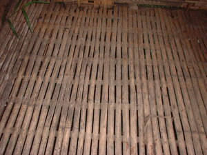

seeg 
/sɔʔɔg/
n.
“floor”
n.
floor
Wrd.Gloss: floor
Migsinaw ka seeg ney su miglakulasan ku te egngaranan te Melikanu te plurwaks.
Eng. floor
Tag. sahíg
Ceb. salug
Ilo.: datár
Binukid: saʔeg
Sarangani: saʔeg
Cotabato Manobo: saʔeg
Tigwanon: seʔeg
Dibabawon: seʔeg
WBM: saʔag
Cagayano: saʔag
Kinamigin: saʔag
Obo: saʔag
Ilianen: saʔag
Tagbawa: asaq
Proto: saʔeg
OCM: Miscellaneous Structures (349)
Online dict status: -
Usage level: B
v.
for someone (egseseeg, agent, eg><ø-rdpCV-) to make a floor with something (igseeg, patient ???, ig-)
Egseseeg ka me etew te leeb dan diyè te puwalas.
Eng. make floor; floor, to
Online dict status: -
Usage level: M
v.
(inseehan, iN–an) to have made the floor
Inseehan ku te basag ka leeb ku diyè te talihebè ku.
Eng. made the floor; floor, to
Online dict status: -
Usage level: R
Updated by: RJH,AAA,RJH
Last updated: 27/May/2009
"seeg" in text "A day's activities"
"seeg" in text "A Father Tells His Children about School"
"seeg" in healthbook "Mig-inum teg gilu si Marina"
This page last updated: 28-Dec-2019
Copyright © 2009-2014, Matigsalug Language Christian Association, Inc